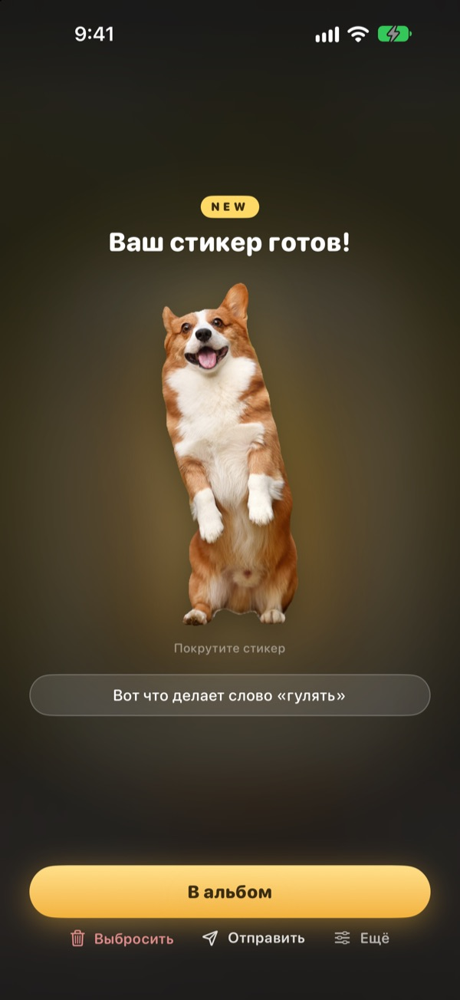
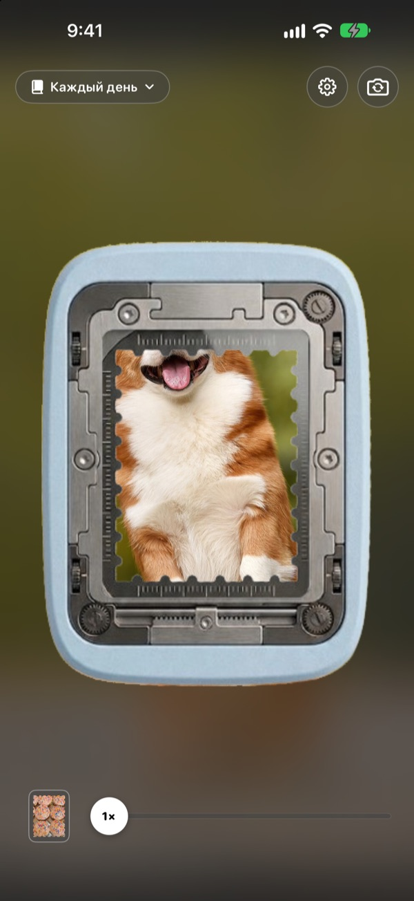
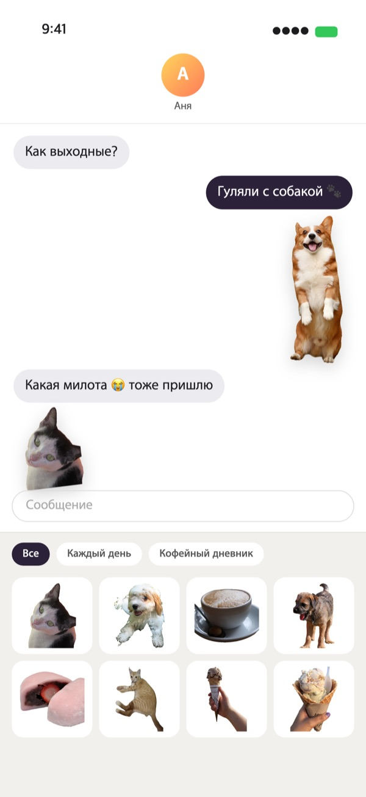
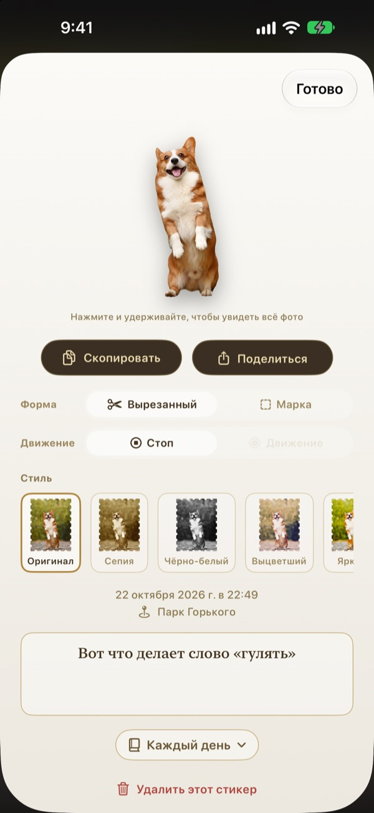
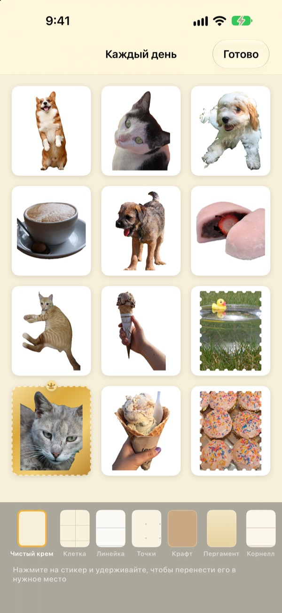

Нажмите и держите.
Этот момент станет стикером
Поймайте сцену в окошко дырокола, нажмите и отпустите. Собака вырежется точно по своему силуэту, а вместе с ней сохранится короткое движение до и после нажатия. Готовый стикер можно сразу отправить в «Сообщениях» или с клавиатуры.
Все функции бесплатны. Стикеры и фото хранятся только на вашем устройстве.

Оторвите стикер сами
Выберите сцену, нажмите и удерживайте кнопку, потом отпустите. Когда стикер готов, попробуйте другую форму и оттенок.
Самые милые моменты так и засыпают в галерее
Вы поймали момент, когда пёс высунул язык. Чтобы отправить его стикером, нужно найти фото, вырезать его и открыть ещё одно приложение для стикеров. А разговор к тому времени уже ушёл дальше. Punching отрывает стикер прямо там, где вы снимаете, и как только вы сохраните его в альбом, он уже лежит в стикерах «Сообщений».
Объект вырезается, пейзаж становится маркой
Если в кадре есть что вырезать — человек, питомец или вещь, — останется только он. Если нет, как на пейзаже, кадр отрывается маркой с зубчатым краем.
Вместе с ним сохраняется короткое движение до и после нажатия, поэтому стикер живой.

Сразу в «Сообщениях» и на клавиатуре
Готовые стикеры появляются в панели стикеров «Сообщений». Включите клавиатуру Punching, и их можно будет выбирать и вставлять в других приложениях.
Живые стикеры приходят живыми. Удерживайте стикер, чтобы скопировать его, и вставляйте куда угодно.

Форму и оттенок можно менять потом
Вырезка или марка, движение или стоп-кадр — переключайте когда угодно. Исходное фото сохраняется, поэтому сколько ни меняйте, стикер остаётся таким же чётким.
Выберите оттенок: Оригинал, Сепия, Чёрно-белый, Выцветший, Яркий или Голубой. Добавьте подпись, дату и место.

Собирайте в альбомы и печатайте на бумаге
Заведите альбом под каждую тему, и в «Сообщениях» и на клавиатуре стикеры тоже будут разложены по альбомам. Выберите фон страницы — крафт, клетку, линейку или пергамент — и расставьте стикеры в любом порядке.
Альбом можно превратить в PDF для печати с линиями реза в форме марок и сразу распечатать на стикерной бумаге.

Три шага, чтобы начать
- 1
Наведите окошко
Поймайте нужное в окошко посередине камеры.
- 2
Нажмите и отпустите
Стикер отрывается в момент, когда вы отпускаете палец.
- 3
Сохраните и отправьте
Добавьте в альбом, и стикер сразу появится в «Сообщениях» и на клавиатуре.
Где пользоваться и где настроить
- «Сообщения»
- ＋ рядом с полем ввода ▸ Стикеры ▸ Стикеры Punching
- Другие приложения
- Включите клавиатуру Punching, переключитесь на неё глобусом и вставьте стикер
- Куда угодно
- Удерживайте стикер, скопируйте и вставьте
- Бумажные стикеры
- ⋯ в альбоме ▸ Использовать ▸ Лист стикеров для печати (PDF)
- Фон и порядок
- ⋯ в альбоме ▸ Оформить как угодно
- Старые фото
- Импорт из «Фото» в альбоме
- Форма по умолчанию
- Настройки ▸ Отрыв ▸ Форма по умолчанию
- Показ движения
- Настройки ▸ Вид ▸ Автовоспроизведение движения
- Быстрый запуск
- «Открыть камеру Punching» в «Командах» или Пункте управления
Настройки открываются кнопкой с шестерёнкой в правом верхнем углу камеры.
Вопросы и ответы
Стикер не двигается.
В правом верхнем углу камеры откройте Настройки ▸ Вид и проверьте, что включено автовоспроизведение движения. Затем коснитесь стикера и убедитесь, что под формой включено движение. Движение записывается всегда, так что включить его можно в любой момент. Фото, импортированные из «Фото», состоят из одного кадра и не двигаются.
Вместо вырезки получилась марка.
Если в кадре нечего вырезать, как на пейзаже, он автоматически отрывается маркой. Коснитесь стикера, чтобы в любой момент сменить форму. Чтобы сразу отрывать марки, измените Настройки ▸ Отрыв ▸ Форма по умолчанию.
В «Сообщениях» не видно стикеров.
В «Сообщениях» нажмите ＋ рядом с полем ввода ▸ Стикеры и найдите «Стикеры Punching». Они появляются, когда вы оторвёте хотя бы один стикер, а если альбомов несколько, их можно листать по альбомам. Подробная инструкция есть в разделе Настройки ▸ Использовать ▸ Использование в «Сообщениях» и на клавиатуре.
Как включить клавиатуру?
В разделе Настройки ▸ Использовать ▸ Использование в «Сообщениях» и на клавиатуре нажмите «Открыть настройки», затем включите «Клавиатуры» ▸ «Стикеры Punching». Чтобы вставлять стикеры, нужен полный доступ, но клавиатура не читает и не отправляет то, что вы печатаете, и не подключается к интернету. Потом в любом приложении нажмите значок глобуса и переключитесь на «Стикеры Punching».
Можно напечатать настоящие стикеры?
Нажмите ⋯ в правом верхнем углу альбома ▸ Использовать ▸ Лист стикеров для печати (PDF). Получится PDF всего альбома в 300 dpi с линиями реза в форме марок: его можно печатать дома на стикерной бумаге или отнести в типографию. Пошаговая инструкция есть в том же меню, в руководстве по печати.
Куда делись мои старые коллекции?
С версии 1.0.1 стикеры группируются только в альбомы. Каждая коллекция стала альбомом с тем же названием, а её стикеры, фон и порядок перенеслись без изменений.
В строке состояния горит зелёный индикатор.
Это индикатор камеры iOS. Он горит, только пока открыт экран камеры. Когда вы открываете альбом, камера останавливается, и индикатор гаснет.
Что будет, если удалить стикер?
Стикер, исходное фото и данные движения навсегда удаляются с устройства и пропадают из стикеров «Сообщений». Восстановить их нельзя, так что будьте внимательны.
Где хранятся фото и стикеры?
Только на вашем устройстве. Нет ни аккаунта, ни собственного сервера, ни рекламы. Наружу уходят лишь анонимная статистика использования, отчёты об ошибках и отзывы, которые вы отправляете сами. Подробнее в политике конфиденциальности.
Это правда бесплатно?
Да, все функции бесплатны. Если приложение понравится, разработчику можно оставить чаевые прямо в нём, но чаевые ничего не открывают.
Вопросы и пожелания присылайте на leeo@kakao.com. Обычно мы отвечаем в течение 2–3 дней. Об ошибках и идеях можно написать и в issues на GitHub: M1zz/StampCamera.